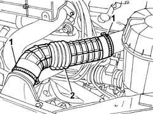
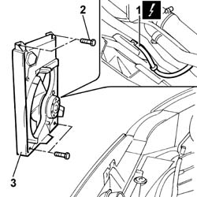
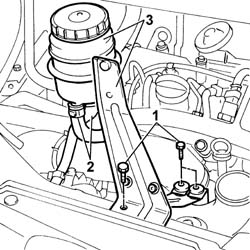
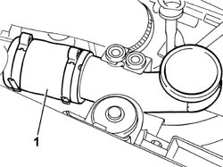
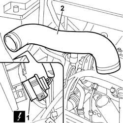

1088E13 RIGHT RADIATOR COOLING FAN - R&R
- Path
- Procedures > 10 ENGINE UNIT > 1088 ENGINE COOLING > 1088E COOLANT TEMPERATURE CONTROL DEVICES > 1088E13 RIGHT RADIATOR COOLING FAN - R&R
- Kind
- repair procedure (removal / refitting; the operation number is the code)
- Applies to
- engines: 2.0 JTD 8V, 2.3 JTD 16V; all production periods
- Interactive page
- https://sloeber94.github.io/elrnDB-fDct/en/#/244000976
Applies to: engines: 2.0 JTD 8V; all production periods
 Removing
Removing
 Refitting
Refitting1. Undo the bolts fixing the cold air intake to the upper crossmember.
2. Disconnect the intake hose from the air filter casing.
3. Remove the cold intake and intake hose assembly from the engine compartment.

Applies to: engines: 2.0 JTD 8V; all production periods
1. Disconnect the electrical connection for the right fan.
Description | Connector | |
|---|---|---|
1 | Engine fan motor -2 | N012 |
2. Undo the retaining bolts.
3. Remove the right fan from its seat on the engine radiator.

Applies to: engines: 2.0 JTD 8V; all production periods
Refitting
Removing- Fit the right fan in its seat on the engine radiator and tighten the retaining bolts.
- Connect the electrical connection for the right fan.
Description | Connector | |
|---|---|---|
- | Engine fan motor -2 | N012 |
- Fit the cold intake and intake hose assembly in the engine compartment and connect the band to the cold air intake on the upper headlamp holder crossmember.
- Connect the intake hose to the air filter casing.
Applies to: engines: 2.3 JTD 16V; all production periods
Removing
RefittingDisconnect the negative battery terminal.
1. Remove the air delivery sleeve to the air-air heat exchanger (intercooler).
Drain off the oil from the power steering fluid reservoir.
1. Undo the bolts securing the power steering fluid reservoir bracket.
2. Disconnect the fluid pipes from the reservoir.
Seal the power steering fluid reservoir pipes to prevent oil emerging.
3. Remove the power steering fluid reservoir from the side complete with bracket.

Applies to: engines: 2.3 JTD 16V; all production periods
1. Remove the second section of the air delivery sleeve to the air-air heat exchanger (intercooler).

Applies to: engines: 2.3 JTD 16V; all production periods
1. Disconnect the right front light cluster electrical connection.
Description | Connector | |
|---|---|---|
1 | Right headlamp | F011 |
2. Disconnect the collars at both ends and remove the air hose from intercooler to intake manifold.

Applies to: engines: 2.3 JTD 16V; all production periods
1. Disconnect the electrical connection for the right fan.
Description | Connector | |
|---|---|---|
1 | Engine fan motor 2 | N012 |
2. Undo the retaining bolts.
3. Remove the right fan from its seat on the engine radiator.
Applies to: engines: 2.3 JTD 16V; all production periods
Refitting
RemovingFit the right fan in its seat on the engine radiator and tighten the retaining bolts.
Connect the electrical connection for the right fan.
Description | Connector | |
|---|---|---|
. | Engine fan motor 2 | N012 |
Fit the air hose from intercooler to intake manifold.
Connect the right front light cluster electrical connection.
Description | Connector | |
|---|---|---|
. | Right headlamp | F011 |
Fit the second section of the air delivery sleeve to the air-air heat exchanger (intercooler).
Fit the power steering fluid reservoir complete with bracket.
Connect the oil hoses to the reservoir and tighten the power steering fluid reservoir bracket bolts to the beam.
Fit the air delivery sleeve to the air-air heat exchanger (intercooler).
Connect the negative battery terminal.